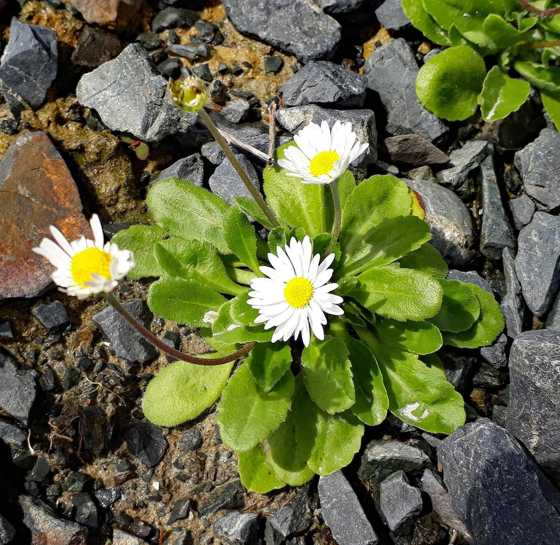

お店の由来と想い
「安田でないと、意味がない」
店主の鳥井実香さんは、三次市吉舎町安田の出身。大学進学後は徳島で暮らしていましたが、2019年春に母校の安田小学校が閉校し、地元から元気が失われていくのを見て、人が集まれる場所をつくろうと考えました。
- 建物は、宿や教員の宿舎として使われてきた古民家。旧安田小学校の目の前にあります。
- 2022年3月にオープン。購入した家屋の軒先では「安田マルシェ」も開かれています。
- 地域の「花鳥風月」を大切なキーワードに活動されています。
情報源(紹介記事・クラウドファンディングのページ): 三次観光推進機構 / 三次広域商工会 / CAMPFIRE
店名「花笑」の由来は、確認できた資料に書かれていません。「笑顔の花が咲く」という表現は制作側のイメージで、お店の説明ではありません。
